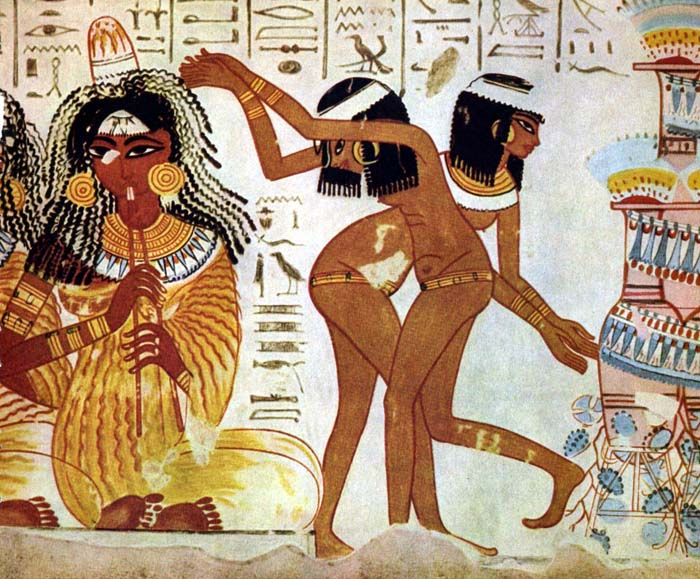
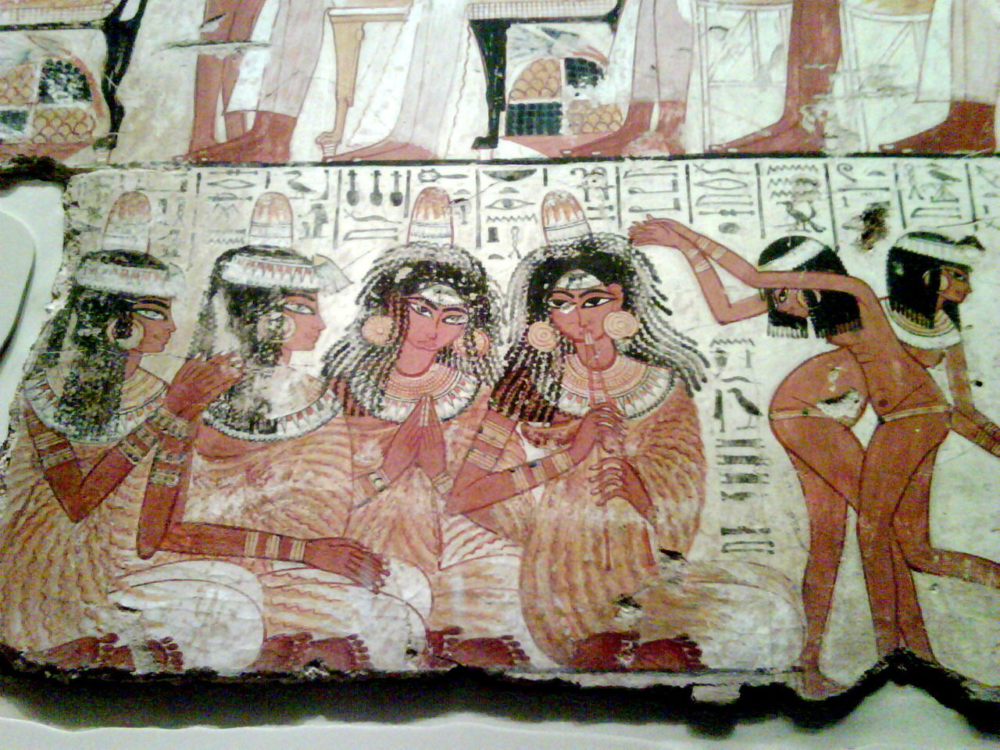
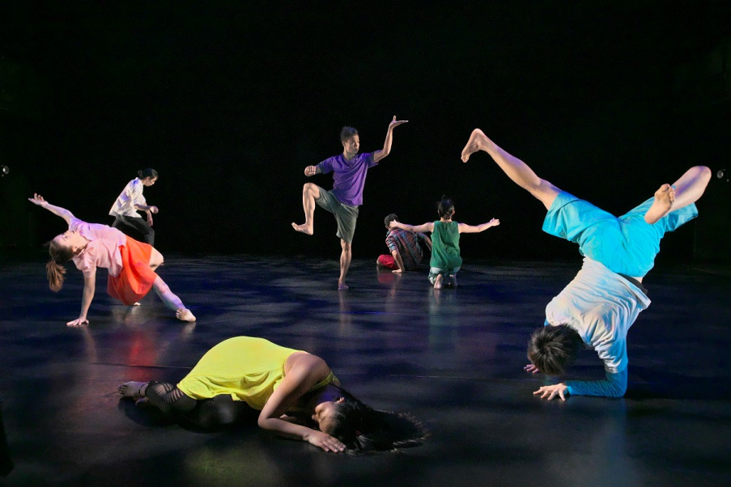
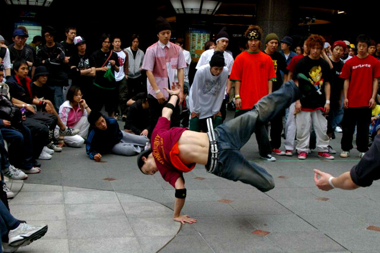
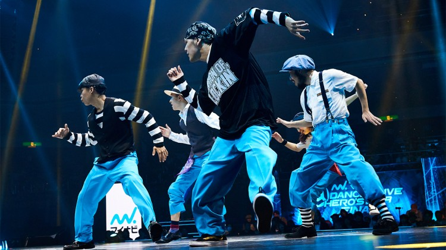

ダンスについて
１．ダンスの歴史
- １.１起源
- ダンスの起源は遥か昔にさかのぼり、文明が生まれる前から踊られていたと考えられており、文献として残っている最古のダンスは古代エジプトの壁画だと言われています。エジプト人女性2人が音楽に合わせて踊っている絵で、ベリーダンスのルーツとなった踊りという説もあります。出産の痛みをまぎらわすための躍り、農作物の豊作を祈るための躍りなど諸説があり、はっきりとしたダンスの目的はいまだに不明です。


- １.２多様性
- ダンスは世界中で自然発生したためジャンルは無限に存在していましたが、はじめから「ジャンル」として認識されていたわけではなく、異なる種類のダンスがどのようにジャンルとして認識され、派生していったのかの過程は解明されていませんが、とても古くから人々はダンスをジャンルに分けていた記録が残っています。

- １.３現代のダンスの認識
- 現代では、ダンスはアートでありダンサーはアーティストだと認識されています。かつてダンサーは「職業」でした。古くからエジプトでは結婚式で踊る風習があったり、宮廷で王様のために踊ったりしてお金を稼いでいたのです。そして、時代が進むにつれだんだんと職業ダンサーは仕事のためだけでなく芸術のために踊るようになり、アーティストになっていきました。


２．現f.jpgのダンス
- ２.１ダンスを職業に
- 2017年の「ダンススクール」の市場規模は約1500億円でした。現在、ダンス教室はさらに増えているため、市場規模は拡大しています。また、ダンスを職業にしている人はインストラクターだけではありません。有名な歌手の後ろで踊るバックダンサーはダンサーたちの憧れの職業です。ダンサーの中には菅原小春さんやKAZUHIROさんなど、バックダンサーの枠を超えて芸能人のように活躍する人たちもいます。ダンスを仕事にする、と言っても活躍する場はたくさんあり、求められる能力は仕事によって異なります。ダンスを職業にしたい場合、強みを分析して自分に合った仕事を選ぶことが大切です。
- ２.２話題のダンスニュース
- 最近は有名アーティストとコラボするダンサーが度々話題になっています。2019年元旦の紅白歌合戦では、菅原小春さんが米津玄師さんの歌に合わせて踊り、大きな注目を浴びました。その後、「ミュージックステーション」で家入レオさんのバックダンサーをつとめたKAZUHIROさんのダンスもインターネット上で話題となりました。このようにダンサーが注目を浴びる機会が増えています。
- ２.３今後のダンス業界
- 今後のダンス業界はさらに規模が大きくなっていくと考えられます。ダンスが現在では義務教育のカリキュラムの一環となり、ダンスのインストラクターの検定も始まりました。ダンスに触れる機会が増えることで確実にダンス人口は増えていき、コミケのような新しいマーケットが構築されていくのではないかと筆者は予想しています。
ジャンル紹介
トップに戻る